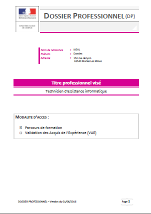

COMPÉTENCES EN INFORMATIQUE
Sur cette page vous pourrez consulter ou télécharger de mes différentes Projet informatique

La réalisation de ce Dossier Proféssionnel a eu lieu pendant ma formation TAI a L'AFPA de Lomme. Le but était de présenter 3 activité pratiquer en stage en entreprise.
Activiter 1: maintenance d'un poste informatique
Activiter 2: rédaction d'une procédure pour réinitialisation un switch CISCO.
Activiter 3: installation d'un serveur SCCM
Vous pouvez visionner l’intégralité du dossier et son annexe en cliquant sur l’image et le télécharger en cliquant sur le lien.
télécharger DP
télécharger Annexe
Dossier Proféssionnel
La réalisation de ce Dossier Proféssionnel a eu lieu pendant ma formation TAI a L'AFPA de Lomme. Le but était de présenter 3 activité pratiquer en stage en entreprise.
Activiter 1: maintenance d'un poste informatique
Activiter 2: rédaction d'une procédure pour réinitialisation un switch CISCO.
Activiter 3: installation d'un serveur SCCM
Vous pouvez visionner l’intégralité du dossier et son annexe en cliquant sur l’image et le télécharger en cliquant sur le lien.
télécharger DP
télécharger Annexe

CAS START
Durée du projet : 6 moisLE projet START qui est le premier projet du CESI. Le but était de présenter une entreprise de notre invention qui emménage dans de nouveaux locaux puis de répondre au cahier des charges.
Il fallait tous prévoir de l'implatation des locaux techniques, le câblage et la topologie.
Les choix de materiel: comparatif, fournisseur et technologie utiliser.
Les choix de logiciels: comparatif, antivirus, sauvegarde, masterisation et déploiement suite bureautique et systheme d'exploitation.
L'équipe: Damien KIEHL (chef de projet), Jean DESPRETZ, Fred MILITO, Valentin DELOFFRE.
Vous pouvez visionner l’intégralité de notre projet en cliquant sur l’image et le télécharger en cliquant sur le lien.
télécharger

Cas EVO
Le projet évolution est une évolution du projet start et comme précédament un cahier des charge a respecterles objectifs de ce projet étais la mise en place des outils d'admistration de windows server et UNIX/LINUX
d'automatiser les tache par l'intermediaire de power shell
la création d'une base de donnée relationnelle sur Access
L'équipe: Gregory DAILLY (chef de projet), Damien KIEHL, Bastien BRAY, Aurélien COCQ. télécharger